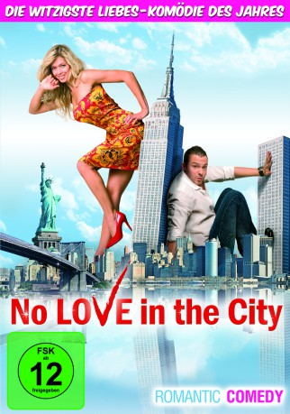

#2857 No Love in the City
 
 IMDB-Wertung: 5.9 / 10
IMDB-Wertung: 5.9 / 10  Metascore: 0
Metascore: 0 
In der erfrischenden Liebeskomödie No Love in the City geht es so richtig drunter und drüber. Drei New Yorker verbindet ein Hobby: Sex! Unverbindliche Flirts mit attraktiven Frauen gehören für die Machos zum Alltag. Endlos könnte es so weiter gehen, doch eines Tages treffen sie auf den Nachtclubbesitzer Valentine. Dumm nur, dass er sich als Heiliger erweist und sie mit einem Fluch belegt: Die drei Frauenhelden verlieren so lange ihre Manneskraft, bis sie endlich die wahre Liebe gefunden haben. Kein Fummeln, kein Knutschen, kein gar nichts. Nun liegt es an ihnen zu erkennen, was wirklich wichtig ist. Die drei Schwerenöter kommen stark ins Grübeln…
Jahr: 2009
Dauer: 84 Minuten
FSK: 16
Land: Russland Studio: Musketier MediaTonspuren:
Untertitel:
Auflösung: 720p (1280x544) Größe: 3358 MB
Genre: Komödie, Liebe
Regisseur: Marius Balchunas
Drehbuch: Marius Balchunas, Vladimir Zelenskiy, Andrey Yakovlev, Sergey Shefir, Boris Shefir
Soundtrack: Vladimir Sayko
Darsteller:
- Ville Haapasalo als Sauna
- Christina Alexandra als Ofitsiantka
- Polina Gorman als Margo
- Natalia Korablina als Volleybolistka No. 2
- Sasha Sloan als Supermodel
 Svetlana Khodchenkova als Nastya
Svetlana Khodchenkova als Nastya Brian Distance als Politseyskiy
Brian Distance als Politseyskiy- Artyom Korovin als
- Justine Cotsonas als Hot Library Girl , uncredited
- Sybelle Silverphoenix als Hot Pole Dancer Girl , uncredited
- Shoshanna Withers als Hot Roller Skater Girl , uncredited
 Aleksey Chadov als Artyom
Aleksey Chadov als Artyom- Vladimir Zelenskiy als Igor
- Fiona Kuchina als Simpatichnaya devushka v avtobuse
- Snezhana Chernova als Devushka v avtobuse No. 1
- Yuliya Sukhanova als Devushka v avtobuse No. 2 / Devushka na lodke
- Ekaterina Zakharova als Devushka No. 1
- Tatyana Kot als Devushka No. 2
- Tatyana Zbirovskaya als Zhenshchina v ocheredi
- Jessie Michaels als Devushka v sportklube No. 1
- Darya Dostal als Devushka v sportklube No. 2
- Anastasiya Zadorozhnaya als Alisa
- Gabriela Modorcea als Bliznyashka No. 1
- Mihaela Modorcea als Bliznyashka No. 2
- Filipp Kirkorov als Valentin
- Oksana Loskot als Volleybolistka No. 1
- Angelina Shipilina als Volleybolistka No. 3
- Margarita Karachaeva als Volleybolistka No. 4
- Vera Brezhneva als Katya
- Carl Garrison als Boyuk
- Olesya Zheleznyak als Pelageya
- Alika Smekhova als Raisa
- Elizaveta Arzamasova als Vera
- Kershal Anthony als Khuligan No. 1 , scenes deleted
- Jason Edwards als Khuligan No. 2 , scenes deleted
- Thomas Studley als Kachok No. 1
- Kevin Ploth als Kachok No. 2
- Masha Borovikova als Assistent Nasti
- Derek Calibre als Vilyam
- Arkadiy Pervyy als Angel
- Andrey Kalugin als
- Olga Pukhova als
- Valentin Gorskiy als
- Yuliya Astakhova als
- Dmitriy Lokotov als
- Oleg Seleznyov als
- Pyotr Andreev als
- Vladimir Trifonov als
- Pavel Madinov als
- Dmitriy Demyanov als
Datei: X:\2009(N-Z)\No Love in the City (2009, FSK16, 1280x544).mkv seit 25.12.2015
Festplatte: HD 2009(G-Z)-2010(A-F)
 Es gibt insgesamt 99 Filme in der Gruppe '2009(N-Z)'
Es gibt insgesamt 99 Filme in der Gruppe '2009(N-Z)'